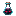

不祥之瓶
Ominous Bottle
获取方式
生物掉落 (2)
illagerinvasion:marauderminecraft:pillager
战利品箱 (6)
irons_spellbooks:chests/citadel/rampart_chestirons_spellbooks:chests/citadel/rampart_suppliesminecraft:chests/trial_chambers/reward_commonminecraft:chests/trial_chambers/reward_ominous_commonminecraft:chests/trial_chambers/specialminecraft:chests/trial_chambers/vault/ominous
其他来源 (4)
irons_spellbooks:spawners/catacombs/ominous_zombie_spawnerirons_spellbooks:spawners/catacombs/regular_zombie_spawnerstrongholds:vault/reward_ominous_commonstrongholds:vault/reward_rare